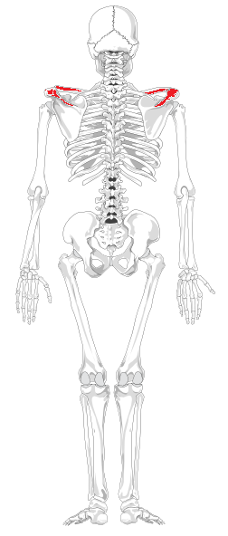
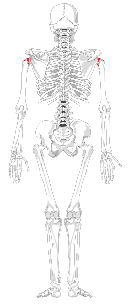
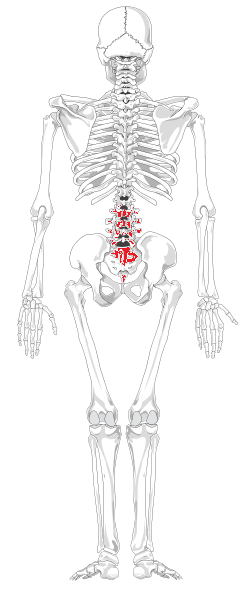

1. Koji je razlog broj jedan za uporabu parkour rolla?
Fluidnost kretnje
Nema nekog bitnog razloga
Da bi otklonili teret s koljena prilikom skoka s većih visina
Da bi otklonili teret s koljena i kralježnice prilikom skoka s većih visina
2. U kojem od slijedećih slučajeva bi bilo poželjno iskoristiti roll:
Preskocili smo ogradu i želimo nastaviti dalje trčati.
Skočili smo s cca. pola metra
Skočili smo s cca. 2 i pol metra
Želimo se popesti na zid.
3. Odaberite sliku koja najbolje predstavlja idealni trenutak kada bi se trebao roll iskoristiti.
4. Kliknite na gumb ispod slike za koju smatrate da najbolje opisuje ispravan položaj ruku za izvođenje rolla
5. Za kraj prođite mišem po razlicitim dijelovima kostura, kako bi vidjeli koje dijelove roll najviše štiti, te povećajte svijest o uporabi ove kretnje.
  